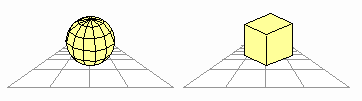

Using vertices, edges, and planes to render three-dimensional models is more complex than it is to use them to render two-dimensional models because of the added depth information. To render a cube in three-dimensions, you need information about 8 vertices, 12 edges, and 6 planes as shown here:
You have to be careful when connecting vertices. If you simply connect vertices to make edges, you may end up rendering an object different from the one you want, as shown here:
You also have to be careful with models that contain planes because many three-dimensional processes have rules about creating planes. The following three rules are representative.
Edges that together define a plane must be closed:
Planes must be convex polygons (polygons without dents). Concave polygons are not allowed:
Polygons having more than three vertices must not be twisted; that is, vertices must be on the same plane, and edges must not intersect:
If you create and draw planes that don't meet these three rules, you won't get the correct result.
Rendering a model that has many planes takes a long time. Therefore, if you try to render a complex model in real-time, you may encounter problems. For real-time rendering, you have to pay close attention to the drawing rate. You need to decide how many surfaces (planes) your game can support. A model with few surfaces like the cube on the right in the following illustration requires a relatively "light" drawing process when compared with a model that has many surfaces like the sphere on the left:

To help with this problem, there is a technique called "back face culling" that ensures that no unseen back surfaces are drawn. This reduces the number of planes to be drawn and therefore lightens the process.
The next problem is how we should judge the front and back of planes. What is obvious to a human being can be a difficult process for a computer. In general, computers judge the front and back by the order of edges created to connect vertices. In the N64 system, planes that are rendered by connecting vertices in a counter-clockwise manner become the front.
You can distinguish front from back for the computer by using a normal vector. This technique will be explained later. It is important for the computer to recognize the front from the back so that it can improve the drawing rate by not doing the drawing calculations for the back side planes.
Pay attention to all the issues discussed here when creating your planes. Then combine the planes to complete a three-dimensional object as shown here:
Nintendo® Confidential
Copyright © 1999
Nintendo of America Inc. All Rights Reserved
Nintendo and N64 are registered trademarks of Nintendo
Last Updated March, 1999